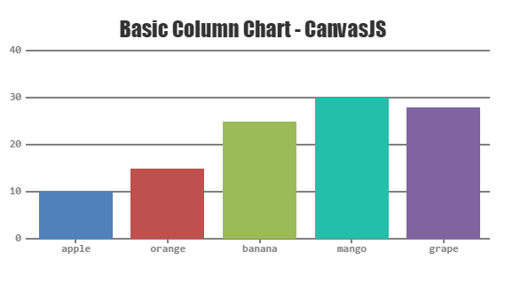

Pizza restaurants
Statistics for
Enriko
4Stats is a simple web application that uses Foursquare API to get data for Macedonian local places or as they are called by Foursquare API - Venues, and create simple statistics for the venues in different categories like: Top 5 venues by rating, users, tips and many others. The statistics are shown with the beautiful CanvasJS chars in various categories and themes.
Please connect with Foursqare to see the content of this application.
Pizza restaurants
Main goal of this project is to explore the CanvasJS library, which is a JavaScript library used for creating various numbers of beautiful charts. In this project I have created a simple web application which is called 4Stats and it is using the CanvasJS library.
4Stats is a simple web application that uses Foursquare API to get data for Macedonian local places or as they are called by Foursquare API - Venues, and create simple statistics for them. The statistics are shown with the beautiful CanvasJS chars in various categories and themes. 4Stats gets the top 50 places in one city, for one category (ex. Pizza restaurants) and creates statistics for the following categories:
Each of these statistics is shown into separate CanvasJS chart with detailed data. 4Stats is also showing some simple statistics for each venue separately, like number of likes, tips, photos, users, checkins.
An easy to use HTML JavaScript Charting library built on Canvas element. Charts can render across devices including iPhone, iPad, Android, Windows Phone, Desktops, etc. This allows you to create rich dashboards that can work across devices without compromising on maintainability or functionality of your web application. Graphs include several good looking themes and are 10x faster than conventional Flash / SVG based Libraries – resulting in lightweight, beautiful and responsive dashboards.
Download the CanvasJS library from the official website. Add the scripts into your project and add the scripts into the head of your HTML page. For standalone version include canvasjs.min.js. For jQuery version include jQuery.canvasjs.min.js.
<head> <script type="text/javascript" src="scripts/canvasjs.min.js"></script> </head>
Using CanvasJS is very easy. Using some simple HTML and JavasScript code we can easily create beautiful charts. Step one is to add a div container in the body of your HTML page. This will be the container where the chart will be rendered. Specify the id for the container which we will use it to identify the container when rendering the chart. Also add height and weight to the div like in the following example.
<body> <div id="chartContainer" style="height: 300px; width: 100%;"></div> </body>
Next we will create a simple JavaScript function which will be called when the
window will be loaded. In this function we will create the chart variable where
the chart will be created. In the constructor new CanvasJS.Chart(params...)
we have to specify the id of the div container that we created in the section above, and
the properties of the chart. We have a various set of properties we can set to the chart
like theme, title, whether to use animation or not, many other things and the most
important part, the data. The data is passed in JSON format which is very easy to use.
At the end we have to render the chart, which is a very easy line of code chart.render();,
and voila, your chart is ready to go.
<script type="text/javascript"> window.onload = function () { var chart = new CanvasJS.Chart("chartContainer", { theme: "theme2",//theme1 title:{ text: "Basic Column Chart - CanvasJS" }, animationEnabled: false, // change to true data: [ { // Change type to "bar", "splineArea", "area", "spline", "pie",etc. type: "column", dataPoints: [ { label: "apple", y: 10 }, { label: "orange", y: 15 }, { label: "banana", y: 25 }, { label: "mango", y: 30 }, { label: "grape", y: 28 } ] } ] }); chart.render(); } </script>
Here is a full example:
<!DOCTYPE HTML> <html> <head> <script type="text/javascript"> window.onload = function () { var chart = new CanvasJS.Chart("chartContainer", { theme: "theme2",//theme1 title:{ text: "Basic Column Chart - CanvasJS" }, animationEnabled: false, // change to true data: [ { // Change type to "bar", "splineArea", "area", "spline", "pie",etc. type: "column", dataPoints: [ { label: "apple", y: 10 }, { label: "orange", y: 15 }, { label: "banana", y: 25 }, { label: "mango", y: 30 }, { label: "grape", y: 28 } ] } ] }); chart.render(); } </script> <script type="text/javascript" src="/assets/script/canvasjs.min.js"></script> </head> <body> <div id="chartContainer" style="height: 300px; width: 100%;"></div> </body> </html>
The code above will show the next chart:

Through the development of this application I run only on one problem. One of the
Bootstrap's priorities is to make
your application responsive, so at most of the time the sizes of the div elements are being changed.
The problem that I found using Bootstrap and
CanvasJS together is that
Bootstrap is setting the size of the container
after CanvasJS renders the chart. Because we've
specified a default size of the chart, the chart is immediately rendered with that size into the container and
Bootstrap sets the size after that. So the chart
does not take the full size of the container. Because of this I had to provide solution that will wait some
time before rendering the chart into the container. Easiest way is to use the setTimeout()
function from JavaScript which will delay the
rendering of the chart. In the following example the chart is rendered with a 10 milliseconds delay.
setTimeout(function(){ chart.render(); },10);
Other similar technologies to CanvasJS are:
Google chart tools are powerful, simple to use, and free. Try out our rich gallery of interactive charts and data tools.
Used by tens of thousands of developers and 61 out of the world's 100 largest companies, Highcharts is the simplest yet most flexible charting API on the market.
Sigma is a JavaScript library dedicated to graph drawing. It makes easy to publish networks on Web pages, and allows developers to integrate network exploration in rich Web applications.
Simple, clean and engaging charts for designers and developers.
D3.js is a JavaScript library for manipulating documents based on data. D3 helps you bring data to life using HTML, SVG and CSS.
I will compare CanvasJS with the technologies listed above on the following criteria:
Google charts provides a very rich chart gallery with a ton of different categories. Each of these categories like Geo charts, Org charts, Timeline and ect. contains different charts. I would definitely say that this is the most rich chart gallery compared to the other technologies and CanvasJS. But I would also say that this is library has the simplest design. Very simple design, not much colours, just enough to show what is needed. On the other hand CanvasJS has a lot better design, providing a beautiful specter of colours, and themes. When it comes to complexity Google charts definitely is the winner. Has a lot richer chart gallery than CanvasJS and can provide a very complex data statistics with the charts listed. Usage is pretty simple at both of the technologies.
Maybe one of the best libraries for charts that I have seen. Very rich chart gallery with a large number of different categories and charts. Design is perfect! Simple, flat colours, beautiful and smooth animations and also High charts offers 3D charts which is really awesome. Another great feature that High charts offers are the charts for Stocks and Maps. Those are also very powerful, whit a lot of options. Definitely better than CanvasJS in these two criteria. High charts can generate very complex data statistics, which is not a very good side of CanvasJS, so again High charts wins. The usage of High charts is a bit more harder that CanvasJS, because there a lot of detailed properties to specify in the chart, but I would say that over the time using this technology, it becomes routine. I would definitely recommend High charts.
SigmaJS is kind of different from the other technologies listed in the section above. Like it says in the description, Sigma is a JavaScript library dedicated to graph drawing. It makes easy to publish networks on Web pages, and allows developers to integrate network exploration in rich Web applications. It cannot be really compared with CanvasJS, so I would explain only about SigmaJS in short terms. SigmaJS does not provide a various categories of charts. There is only one chart, but is very very customizable. It can be used to provide graphical representation of graphs, and it is easy to use, specifying JSON data and few parameters.
Perhaps the most similar technology to CanvasJS. Provides few categories of charts, which is a lot less than CanvasJS. Design is quite the same as CanvasJS. Very simple, very colourful, and animations are included. When it comes to complexity, I would say that ChartJS is better, because of the various configuration that can be set to the chart. But that makes it very hard to use it, because there is a lot of configuration to be set. CanvasJS is definitely easier to use.
When it comes to usage D3.js is perhaps the most hard one. There are any kind of abstractions, or some functions that would easily create charts. Instead the developer itself has to specify a lot of stuff, including SVG code to draws some, let say simple bar chart, to make things working. A lot of work when it comes to simple charts. But on the other side this can lead to very powerful data manipulation and statistics. Definitely more complex than CanvasJS but also a lot lot harder to use. Design is awesome because it is a clean combination of CSS3, HTML 5 and SVG. Really hard technology, requires a lot of knowledge for other technologies (ex. SVG), and I would say that CanvasJS can do the same job, very easier (not including performance here).
At the end I would say that CanvasJS is really awesome technology for graphical representation of charts. Very easy to use, beautiful design and provides a rich chart gallery. From all the other list technologies I would definitely recommend High charts. Compared to the other technologies including CanvasJS, my personal opinion is that High charts is better.
All the data 4Stats uses is pulled by the Foursquare API.The Foursquare API gives you access to world-class places database and the ability to interact with Foursquare users and merchants. Using simple AJAX call and some JavaScript code (can be done with many different technologies) you are able to get various data not only for local places, but also for users, checkins, tips, photos, events and etc., in many different categories. The data is returned in JSON format which is very easy to parse. 4Stats uses the Explore API from Foursquare, that is returning the top 50 places for one category in specified city.